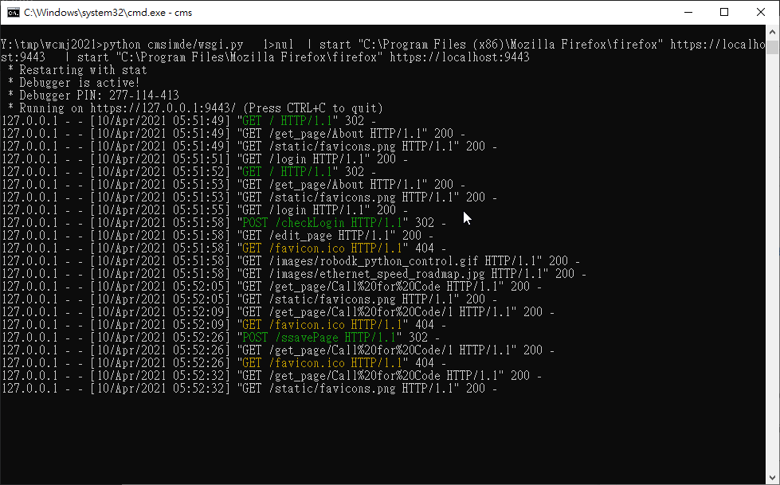
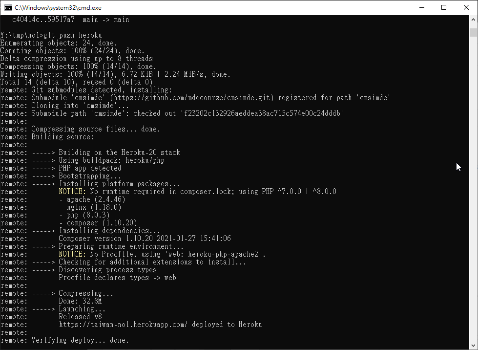
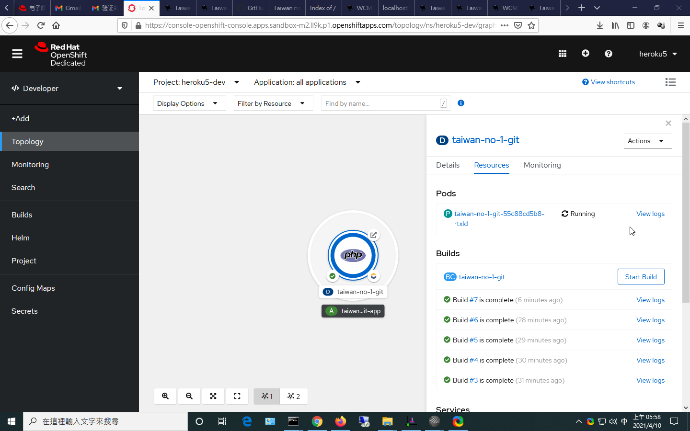

Next >> 建立雲端網站
Call for Code
構想:
- 利用三種雲端程式技術部署協同網站內容 - 所需程式技術 Python + Flask + Github + Heroku + RedHat Openshift cloud site
- 利用機構觸動冷氣與照明電源開關進行機械式控制, 並透過電子感測器與各實驗室排課時間表協助開關控制
- 網際簡報連同分組網站部署在三套雲端主機, 也可在無網路情況下以近端動態或靜態網站進行簡報
- 分組網誌內容透過 Oauth2 相關雲端授權程式, 可將 Pelican 網誌內容同步至 Google Blogger 增加內容備份與曝光範圍
- 利用 Arduino 與 Raspberry Pi 微控制卡整合環境感測並採網際遠端監控機電式開關
- 利用跨平台手機 Flutter 程式 app 與無線網路, 連結微控制機電系統上的伺服器程式, 對省電開關模組進行監控
近端動態網站編輯:

Heroku 同步網站 app 部署:

RedHat PHP App build:

RedHat Openshift and Github Pages
http://taiwan-no-1-git-heroku5-dev.apps.sandbox-m2.ll9k.p1.openshiftapps.com/content/index.html
將 Github Pages 的網站部署到 Heroku 與 RedHat Openshift
與上述 Openshift 上的網站同步:
https://taiwan-no1.herokuapp.com
https://heroku5.github.io/taiwan-no1
三個雲端網站同步部署流程:
- 主要倉儲位於: https://github.com/heroku5/taiwan-no1
- 透過 Github Pages 設定完成: https://heroku5.github.io/taiwan-no1
- 透過 Heroku CLI 將近端倉儲在 Heroku 登入狀態下以
heroku git:remote -a taiwan-no1 設定 git remote add 後, 再透過 git push heroku 將資料同步至 Heroku 雲端主機 https://taiwan-no1.herokuapp.com
RedHad Openshift 部分則使用 Topology, 點選 php app 後 Start build, 就能從 https://github.com/heroku5/taiwan-no1.git 取得倉儲內容後完成 build , 透過兩段網站跳轉, 從 index.php 跳至 index.html 再跳轉至靜態網站 content/index.html, 完成 http://taiwan-no-1-git-heroku5-dev.apps.sandbox-m2.ll9k.p1.openshiftapps.com/content/index.html
Next >> 建立雲端網站